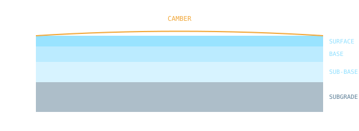

Highway geometric design, pavement materials, traffic engineering and railways.

Introduction to Transportation Engineering — IIT Kharagpur
Click an option to see the correct answer and a short explanation instantly.